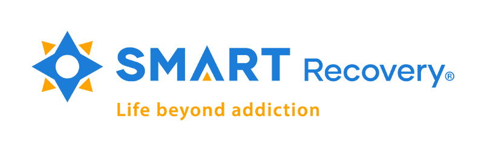
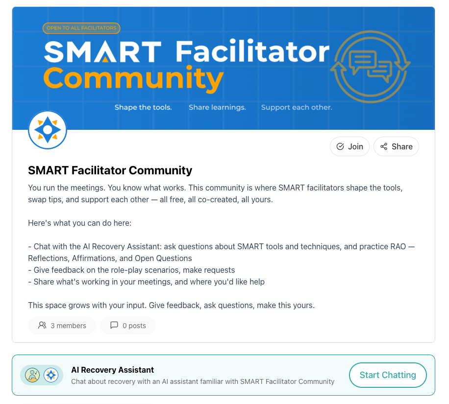
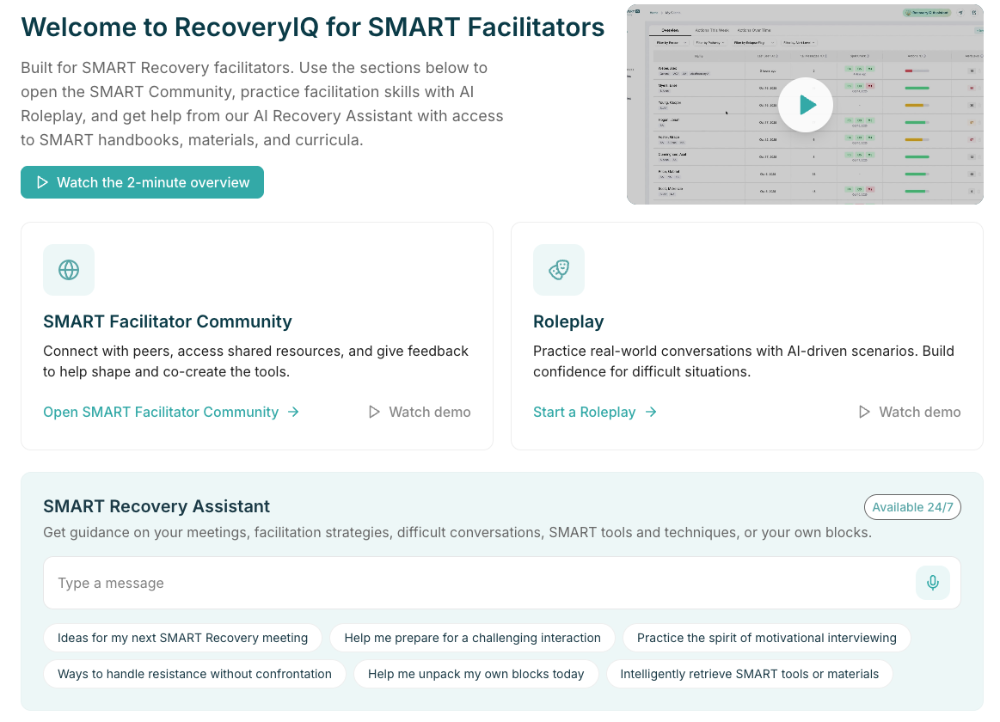
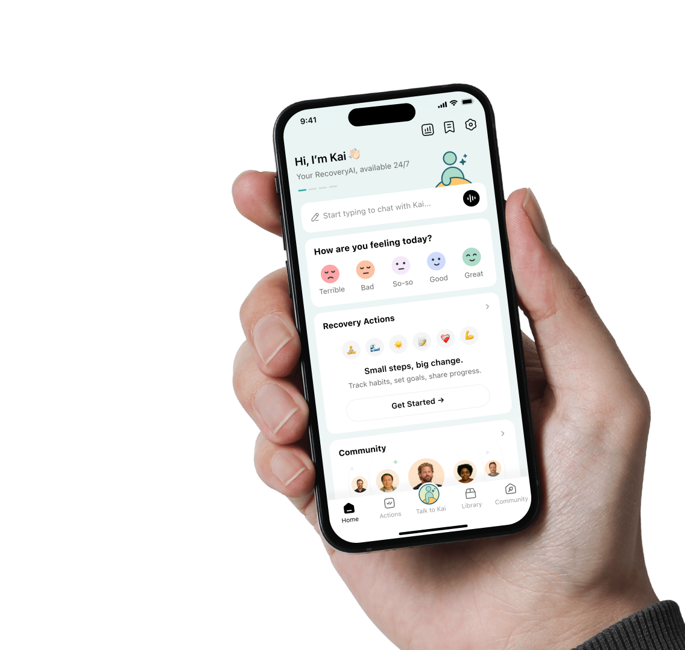
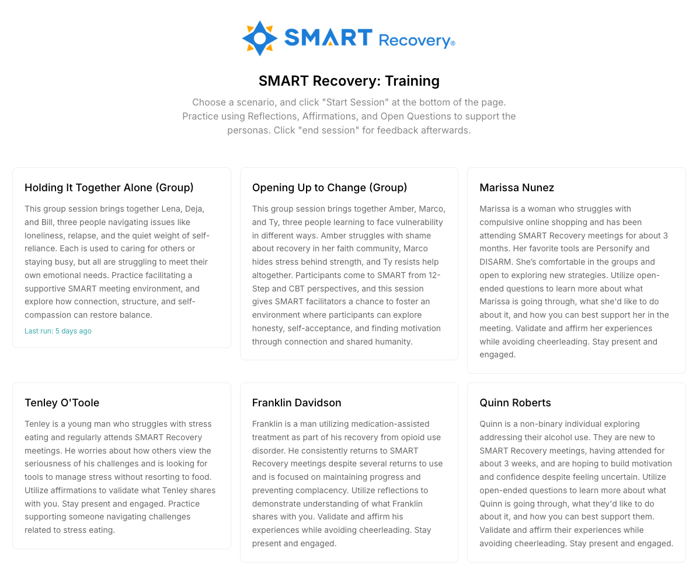
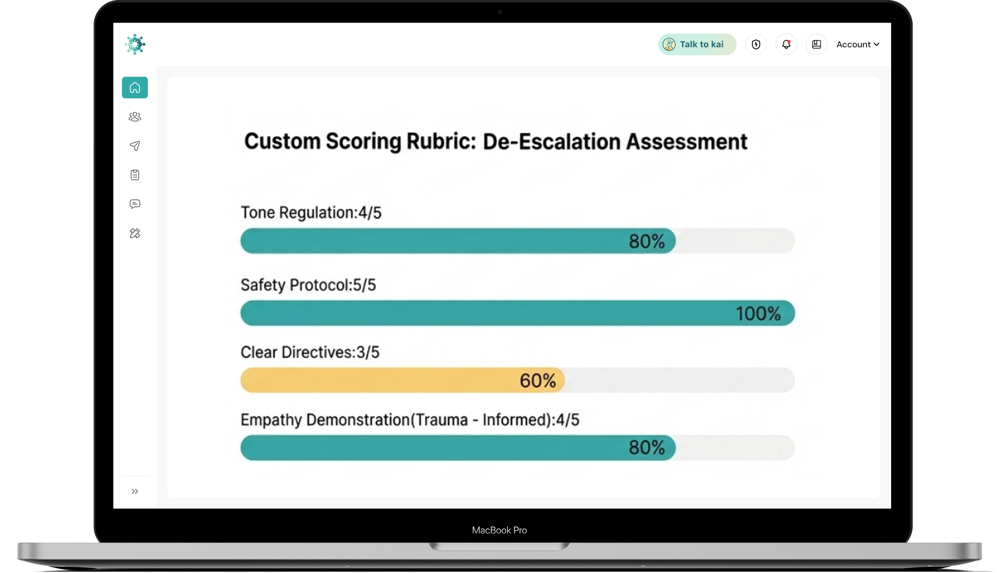

6 mo
Initial partnership term

SMART Recovery x OpenRecovery
Strategic partnership proposal for facilitator support, guided practice, and future training infrastructure.
A six-month engagement beginning in April 2026. Phase 1A launches the SMART Facilitator Community, retrieval-backed knowledge support, a custom AI Assistant in RecoveryIQ, and 8 SMART-specific roleplays. Phase 1B keeps SMART live on the products while OpenRecovery refines them based on real facilitator feedback.
Built for a practical Phase 1A launch first, then a Phase 1B refinement cycle shaped by live SMART usage before broader expansion.
6 mo
Initial partnership term
8
SMART-specific facilitator scenarios
$5k
Implementation fee waived
$2k
Monthly Phase 1 partnership fee
Shared Mission
This introduction video frames the partnership around a simple idea: SMART makes emerging science practical and autonomy-centered, and OpenRecovery applies the same philosophy to emerging technology.
Core Message
SMART Recovery turns evidence-based practices into something accessible, actionable, and respectful. OpenRecovery is pursuing the same goal with AI and digital tools, using lived recovery experience and technical expertise to strengthen human support instead of replacing it.
What The Video Highlights
Invitation
The close of the video invites participants to try the tools, shape them, and co-create at the workshop on Thursday, April 9, 2026 at 5:00 PM.
Executive Summary
Phase 1A delivers the first live facilitator environment. Phase 1B then uses actual SMART usage, facilitator feedback, and product observations to refine workflows, prompting, reporting, and overall fit before any broader expansion.
Phase 1A launches the core facilitator tools and pilot-ready support environment.
Phase 1B keeps SMART live on the products and refines them from real-world feedback.
Use what is learned across the 6 months to guide future training and platform expansion.
Phase 1A Launch
Phase 1B Refinement
Future Expansion
After Phase 1B, SMART and OpenRecovery can decide whether to expand into AI-enabled versions of SMART’s 5 training modules, facilitator readiness pathways, broader LMS experiences, certification infrastructure, and new partner or revenue opportunities.
Outcomes
The proposal is structured around three connected outcomes that help SMART deliver better facilitator support now while building a more scalable training model over time.
Outcome 01
Give facilitators a dedicated SMART environment where answers are grounded in approved materials instead of scattered files or informal handoffs.
Outcome 02
Create a more guided, intuitive digital support layer through a SMART-specific AI Assistant embedded in RecoveryIQ.
Outcome 03
Pair facilitator development with realistic practice and lightweight reporting so SMART can evaluate readiness and refine the next phase with real usage data.
Workstream 01
Opportunity
Facilitators need a dedicated environment where they can find reliable answers, connect with one another, and access SMART guidance without bouncing between disconnected documents and ad hoc channels.
What Phase 1A Delivers
How Phase 1B Refines It

Workstream 02
Opportunity
SMART can give facilitators a more guided and interactive support experience through a custom AI Assistant embedded in RecoveryIQ and aligned to the facilitator environment.
What Phase 1A Delivers
How Phase 1B Refines It


Workstream 03
Opportunity
Facilitators benefit from realistic practice environments that help them build confidence, apply SMART principles, and prepare for real-world interactions.
What Phase 1A Delivers
How Phase 1B Refines It


Product Demo
A live look at the RecoveryIQ dashboard experience that anchors facilitator visibility and the broader SMART digital environment.
What This Shows
The dashboard preview gives SMART stakeholders a concrete view of the product layer that supports facilitator guidance, activity visibility, and connected workflows across the Phase 1A environment.
Why It Matters
Engagement Phases
Phase 1A covers April through June 2026 and delivers the first live environment. Phase 1B covers July through September 2026 and focuses on usage, feedback, refinement, and planning for what comes after the initial 6-month engagement.
Phase 1A | April 2026
Finalize knowledge sources, reporting format, assistant configuration, and pilot-ready setup.
Phase 1A | May-June 2026
Begin facilitator use, activate the first live workflows, and establish the feedback baseline.
Phase 1B | July-August 2026
SMART uses the products live while OpenRecovery refines prompts, flows, scenarios, and reporting from actual feedback.
Phase 1B | September 2026
SMART and OpenRecovery review results together, assess the refined products, and decide the direction for future expansion.
Potential Future Expansion
Scope, Delivery & Acceptance
Included Across Phase 1A + 1B
Acceptance Criteria
Explicit Exclusions
Investment
Phase 1 is structured to make activation easy: the build fee is waived as part of the partnership, with a simple monthly fee covering both the Phase 1A launch and the Phase 1B refinement cycle.
Implementation / Build Fee
$5,000
Waived at no cost as part of this strategic partnership.
Monthly Phase 1 Fee
$2,000
Supports the full 6-month Phase 1 engagement beginning in April 2026.
What The Monthly Fee Covers
Future Commercial Note
Any expansion beyond Phase 1B is scoped separately once SMART and OpenRecovery align on the final direction for LMS delivery, training modules, readiness pathways, reporting depth, certification, and revenue expansion.
Next Steps
Immediate Actions
What SMART Should Have By End Of Phase 1